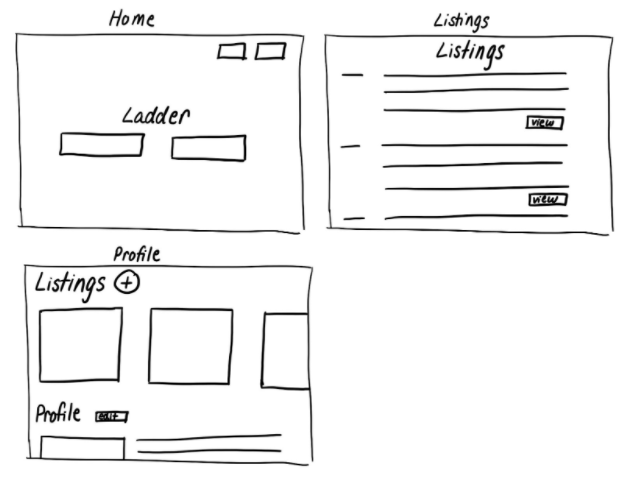

What steps are required to transform an idea into a usable interface?
Overview
To examine this question, we have taken an early-stage startup idea from the
2020 YCombinator's Demo Day and iteratively designed a web interface strictly based
on the concept. This process included:
Creating basic sketches
Combining the ideas from the sketches into a low-fidelity wireframe
Incorporating visual design elements to form a high-fidelity prototype
Undergoing critique and feedback in order to improve upon the high-fidelity prototype
Performing user testing to evaluate user experience of our interface
Ladder
Ladder is a construction-based labor marketplace that seeks to connect employees and employers in order to
provide long-term employment. Techcrunch describes Ladder in the following statement:
Building a labor marketplace to help construction companies hire skilled workers for permanent positions.
Essentially, Ladder works as an HR team that construction companies can turn to for hiring and retention
needs. It has 1,340 workers on the platform and booked $12,200 in revenue in the first month of launch.
Basic Sketches
Pre-Design Thinking
We decided to create a web interface for this project because we envisioned Ladder to primarily be a website;
the tasks that a Ladder user would want to perform (i.e. hiring, job searching, etc.) are done on a
computer within a typical user's mental model.
We imagined that Ladder would be used on both sides of the hiring process. Thus, we wanted
to make the interface such that it was effectively facing both of the prospective user groups: employees and employers.
Sketching
We created 4 sketches based on distinct visions of the interface.

This sketch encapsulates a interface idea where only employers can make posts, like a listings
website. We also wanted to go with a minimalist home page for user interface purposes.
This sketch is an efficiency-focused interface where we wanted the user to immediately be able
to view the listings from the home page. We expected that all types of postings would exist
on this listings page, and the user would be able to filter based on their needs.
This sketch aims to clearly separate the work flows for employers and employees. It is a very
segregated interface model where each user group would have their own space.
This sketch demonstrates an interface that is very user centered and public facing in the sense
that it provides a more simplified listings and profile pages. The interface would likely be
the easiest to transfer into a mobile interface.
Low-Fidelity Wireframe
We combined the ideas from the above sketches into the following low-fidelity wireframe:
High-Fidelity Prototype
Original High-Fidelity Prototype
Below is our original high-fidelity prototype that incorporates visual design elements into the functionality
from our low-fidelity wireframe:
Iterative Feedback
Our original prototype received the following feedback from our mockup critic studio. Our changes
in response to this feedback is addressed in the sub-bullets from the list.
Employees should be categorized for searching purposes
We added a occupation type categorization for employees
Employee names not as important for employer search (would rather have a job description)
We emphasized the employee categorization over the employee names in
the listings search page
Might want to save a job or come back to it before you publish
We added save, publish, and unpublish features for our jobs
Job listing and employees pages look similar with similar layout (confusing to which side you are on at first glance)
We changed the color schemes of employee vs. employer listing and search functionalities
Scrolling down for mission statement is not accessible (and not really important for functionality)
We removed the mission statement from our home page because it was not essential to the functionality for the webpage
Why would you want to go see the employee page for “View” (is the employee public profile page necessary)
We removed the publicly accessible page for employees and changed the view button to a contact button in order to reduce complexity and confusion
Improved High-Fidelity Prototype
We accounted for the above constructive criticism in the following improved high-fidelity prototype:
User Testing
We conducted user testing to evaluate user experience which would give us insight to areas of improvement for future
interface development. We prompted our users with the following section and then gave them 4 subtasks to complete:
You will be examining a prototype (through Figma) of a website that acts as a labor marketplace for
construction workers and companies. Therefore, imagine that you are an employer who wants to sign
up and utilize our service in order to find employees. Note that this is not an actual website but
an interactive mockup made on a prototyping software, so there are limitations to what you can do
with the prototype. If you are unsure where to click, click an empty spot on the screen and blue
boxes will blink where there are clickable locations. You will not be able to actually interact
with the fields; just focus on navigating through the interface for the tasks!
Sub Tasks:
Sign up as an employer
Mock "edit" your profile
Create a job posting
Search for employees
User Test 1
User Test 2
User Test 3
This user unfortunately did not record the prototype interface as she was interacting with it,
but we were able to ascertain her actions by her speech.
Testing Results
Our user testing results were largely inline with our overall expectation; for most of the sub tasks,
users were able to quickly do what was asked of them.
One thing users struggled with was knowing how
to search for employees when on the employer profile page. From this, we know that the search bar likely
needs to be added to the profile editing pages if development were to occur farther. The reason why this was not
added initially was because we expected that users would save the profile and be able to search from there, but
now we know that it would be better to have the search bar directly on the editing page and likely have a pop-up
warning ensuring that the users saved their profile before leaving the page.
Another issue identified was that
the save button for the Jobs section on the editing profile page was confused with the overall save button for
this page. We realize this could be a point of confusion, and to address this, we would either move the Jobs
section to a different page or change the phrasing and structure of the buttons on the Jobs section make it more clear.
Development
After receiving feedback from the above users and the co-founder of the real Ladder startup, we have created and deployed
a functional web application based on our design. Our application was created
using a React frontend and a Node.js backend, along with a PostgreSQL database. Additionally, it includes many features such
as user authentication, search functionality, individualized accounts and profiles, and responsive design. A demo video
examining the functionality of the site created by our group and the deployment link are included below.
Throughout all of these steps, we believe we have arrived at an effective user interface for Ladder, and we hope that you
have gained some insights on the steps that are required to transform an idea into a usable interface.